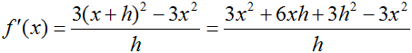
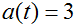
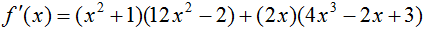
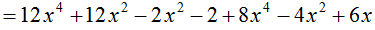
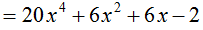
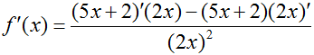
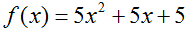
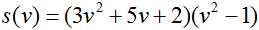

The Definition of the Derivative
As you saw in the last section, the derivative of a function measures the function's rate of change, or its slope. To give you a better idea of what a derivative is, imagine that Bob The Crash Test Dummy is driving a car. Bob's car is on fire, which is why his driving is somewhat erratic. The function
models the number of miles driven after t hours has elapsed. After one hour has passed, Bob looks at his melting odometer to see that he has driven 21.5 miles. According to his speedometer, Bob is traveling at a measly 23 miles per hour, which spurs him to wonder audibly how much he'll be paid for this "invigorating yet harmless driving stunt" that Stunt Dummies International signed him up for. Five hours later (t = 6 hours), Bob finds that he has covered a total of 174 miles and is currently moving at 38 miles per hour. Since 174 miles was all Bob had to drive, he slams on the brakes, gets out of the car and telephones mission control on his tungsten cellphone.

In this example, the speed that Bob was traveling at any point in time could be described as the rate of change of his position at that point -- also known as the derivative of his position function. The change in the speed of Bob's car over time was his acceleration, or the rate of change of his rate of change throughout the journey. His acceleration can also be described as the second derivative of his position function, though we will mostly be concerned with the first derivative for now.
Do you see now how derivatives relate to motion and position? This is very much the same as with the functions of the last section; you can think of the slope of a tangent line as the function's speed at that point. Just as a speedometer gives a vehicle's instantaneous speed, the derivative gives a function's instantaneous rate of change. Since finding derivatives via the limit process of the last section can be rather tedious, though, it is time to introduce a much faster method.
The Rules of Differentiation
Differentiation is the process of finding derivatives, a process that becomes much faster once you have master the upcoming rules! Most calculus books have a chart of such rules on the inside front or back cover for easy viewing, though this page should also serve as a faithful reference. I'll start with just a few of the rules here, and explain them as I go.
Constant Rule
If and a is a
real number, then
and a is a
real number, then .
.
Constant Multiple Rule
If and a is a
real number, then
and a is a
real number, then .
.
Power Rule
If and n is a
real number, then
and n is a
real number, then .
.
The function f'(x) (pronounced 'f prime of x') signifies the first derivative of f(x). To explain the Constant Rule, think of a function that is equal to a constant, perhaps the number 3, the square root of 5, the number e, or just a constant 'a'. The graph of such a function will necessarily be flat, and thus have a slope of zero. It is natural, therefore, that:

In order to save space, I won't use 'lim' in the other examples. The variable 'h' is assumed to be approaching zero. For the Constant Multiple Rule:

I used 'a' again instead of an actual number just to show that it works for a general case. The Power Rule is more difficult to prove for xn, though, so I'll use an actual number in tandem with the Constant Multiple Rule.


Keep in mind that if the variable's power is a negative number, you will have to multiply through the negative sign. So if f(x) = 4*x^-3, then f'(x) = -12*x^-4. Negative exponents also 'get bigger', since the Power Rule dictates that you must subtract 1 from the exponent's power.
Going back to the example about Bob in his car, let's take the derivative of his position function to see how fast he was moving at any point in time.

The function v(t) is a better representation for instantaneous velocity than x'(t), which explains the above. Based on the newly-found formula for Bob's velocity, we can confirm his observations that v(1) = 23 and that v(6) = 38. If we take the derivative of the velocity function, now:
,
Bob was accelerating at a rate of 3 miles per hour per hour, which explains why he was moving more quickly toward the end of his journey than at the start. Compare the position, velocity, and acceleration functions in the following graph:
var('t')
plot(3*t^2/2+20*t, t, 0, 6)+plot(3*t+20, t, 0, 6, rgbcolor='red')+line([(0, 3), (6, 3)], rgbcolor='green')
Toggle Explanation Toggle Line Numbers
1) Initialize t.
2) Plot Bob's position, velocity, and acceleration for his six-hour drive.
You can see that as Bob's velocity gradually increased (the red line), his distance traveled (the blue line) began to rise more quickly. His acceleration remained constant (the green line), which caused his velocity to increase linearly.
The next two differentiation rules are not as easy to apply as the first three, so pay attention. What makes them less straightforward is that both usually involve a fair amount of work.
Product Rule
If f and g are differentiable at x, then
Quotient Rule
If f is the quotient g(x)/h(x) and h(x) ≠ 0, then
As an example of the product rule, think of two expressions, (x2+1) and (4*x^3-2*x+3) that are multiplied together. To take the derivative of their combination, one could either multiply through (which would be somewhat of a hassle) or apply the product rule, which is the much better alternative.
  
I wouldn't recommend simplifying the result of the product rule unless you have to; it's much safer just to leave it as it is, especially if you are going for the second derivative as well. The quotient rule is another case where you don't always want to simplify, since generally leaving the denominator as it is (without squaring) looks much cleaner and is still a valid answer. In this case, though, simplifying turns out to be a valid option.
 , then
, then


Practice Problems
1)  Toggle answer
2)  Toggle answer
3)
 Toggle answer
Toggle answer
*If you were to differentiate x2 in Sage, for example, you would use
derivative(x^2, x)
This is also the last lesson for now; sorry! Check back in a couple of weeks.